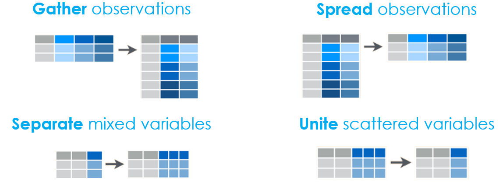

Chapter 10 [Tutorial] Tidy data
10.1 Voor je begint
Tijdens deze tutorial zullen we verschillende r-pakketten gebruiken. Zorg ervoor dat je ze installeert, indien nodig, en laadt.
library(dplyr)
library(tidyr)
library(stringr)Onze oude vriend dplyr zal ons voorzien van enkele functies om verschillende datasets te combineren tot één. We zullen tidyr gebruiken om datasets te transformeren, en stringr om enkele manipulaties van tekstvariabelen te doen.
Deze handleiding bestaat uit twee grote delen:
- Samenvoegen van datasets
- Datasets transformeren
Daarna, in een extra deel, zullen we een case study als voorbeeld doornemen.
Disclaimer
Er worden veel datasets gebruikt in deze handleiding. Een loadscript is voorzien om alle datasets voor je aan te maken. Voer het script uit en je kan aan de slag/
Laten we beginnen!
10.2 Data samenvoegen
We kunnen verschillende datasets samenvoegen door joining of binding.
- We joinen verschillende datasets die verschillende informatie bevatten over dezelfde waarnemingen. Zo kunnen we bijvoorbeeld 1) een dataset hebben van landen met hun bevolking en 2) een dataset van landen met hun levensverwachting. Deze kunnen we joinen.
countries_population## # A tibble: 114 x 2
## country pop
## <fct> <int>
## 1 Botswana 1639131
## 2 Greece 10706290
## 3 South Africa 43997828
## 4 Ethiopia 76511887
## 5 Zimbabwe 12311143
## 6 Yemen, Rep. 22211743
## 7 Nepal 28901790
## 8 Netherlands 16570613
## 9 United States 301139947
## 10 New Zealand 4115771
## # ... with 104 more rowscountries_lifeExp## # A tibble: 85 x 2
## country lifeExp
## <fct> <dbl>
## 1 United States 78.2
## 2 Argentina 75.3
## 3 Korea, Dem. Rep. 67.3
## 4 Bulgaria 73.0
## 5 Chile 78.6
## 6 Croatia 75.7
## 7 Canada 80.7
## 8 Honduras 70.2
## 9 Liberia 45.7
## 10 Mexico 76.2
## # ... with 75 more rows- We binden verschillende datasets die dezelfde informatie bevatten op verschillende waarnemingen. Zo kunnen wij bijvoorbeeld beschikken over 1) een dataset van Europese landen met hun bevolking en 2) een dataset van Afrikaanse landen met hun bevolking. We kunnen deze twee aan elkaar binden.40
population_africa## # A tibble: 52 x 2
## country pop
## <fct> <int>
## 1 Algeria 33333216
## 2 Angola 12420476
## 3 Benin 8078314
## 4 Botswana 1639131
## 5 Burkina Faso 14326203
## 6 Burundi 8390505
## 7 Cameroon 17696293
## 8 Central African Republic 4369038
## 9 Chad 10238807
## 10 Comoros 710960
## # ... with 42 more rowspopulation_europe## # A tibble: 30 x 2
## country pop
## <fct> <int>
## 1 Albania 3600523
## 2 Austria 8199783
## 3 Belgium 10392226
## 4 Bosnia and Herzegovina 4552198
## 5 Bulgaria 7322858
## 6 Croatia 4493312
## 7 Czech Republic 10228744
## 8 Denmark 5468120
## 9 Finland 5238460
## 10 France 61083916
## # ... with 20 more rowsLaten we eens kijken hoe we gegevens kunnen samenvoegen.
10.2.1 Joining data
Vergeet niet dat we datasets samenvoegen als ze verschillende informatie over dezelfde waarnemingen bevatten. Dit betekent dat er een manier moet zijn om de datasets te linken. Deze koppelingen noemen we ids of keys.
Als we bevolkings- en levensverwachtingsgegevens over landen hebben, dan is de naam, code of afkorting van het land onze key om beide datasets te koppelen.
Merk op dat, wanneer beide datasets verschillende sleutels gebruiken, bijvoorbeeld de ene gebruikt de naam (België) en de andere de code (BE), we ze niet kunnen samenvoegen. In dat geval zouden wij een van de variabelen moeten hercoderen of een andere dataset moeten vinden die als intermediaire link kan dienen (d.w.z. een die zowel de namen als de codes bevat. Er bestaan veel verschillende landencodes, dus dit is een veel voorkomend probleem. Maar in ons geval kunnen we aan de slag)
De join functies die we zo zullen introduceren zullen altijd zoeken naar variabelen met dezelfde namen in beide tabellen en deze gebruiken als de sleutels om ze te koppelen. Je kunt de sleutels expliciet instellen met het by argument. Dit is vooral nuttig indien
- De sleutels in beide datasets een verschillende naam hebben. Bijvoorbeeld country vs ctry
- Niet alle gemeenschappelijke variabelen ook daadwerkelijk sleutels zijn.
Voorlopig zullen we de sleutels altijd laten kiezen door de functies. Een bericht zal ons vertellen welke sleutels ze hebben gebruikt.
Er zijn 4 manieren om datasets samen te voegen.
- inner_join
- left_join
- right_join
- full_join
Waarom vier? Wel, als we twee datasets willen samenvoegen, gebeurt het meestal dat ze informatie bevatten over niet exact dezelfde waarnemingen. Kijk maar eens naar de gegevens over de bevolking en de levensverwachting. De eerste bevat informatie over 114 landen en de tweede bevat informatie over 85 landen. Ze kunnen dus onmogelijk informatie bevatten over dezelfde set van landen. De verschillende joins zullen dit probleem verschillend aanpakken.
10.2.2 Inner join
Inner join betekent: Ik bewaar alleen informatie over keys die in beide tabellen voorkomen. Dus, als ik de bevolking van land A niet heb, wil ik ook de levensverwachting niet hebben.
inner_join(countries_population, countries_lifeExp)## # A tibble: 73 x 3
## country pop lifeExp
## <fct> <int> <dbl>
## 1 Botswana 1639131 50.7
## 2 South Africa 43997828 49.3
## 3 Ethiopia 76511887 52.9
## 4 Zimbabwe 12311143 43.5
## 5 Yemen, Rep. 22211743 62.7
## 6 Netherlands 16570613 79.8
## 7 United States 301139947 78.2
## 8 Kuwait 2505559 77.6
## 9 Colombia 44227550 72.9
## 10 Austria 8199783 79.8
## # ... with 63 more rowsDeze join geeft ons 73 waarnemingen, dat is de deelverzameling van landen waarover we beide soorten informatie hebben. Merk ook op hoe de inner_join je vertelt welke key het heeft gebruikt.
10.2.3 Left join
Left join betekent: Ik bewaar alle informatie in mijn eerste (linker) tabel. Dus, zelfs als ik de levensverwachting niet heb, geef me nog steeds de bevolking. Het ontbrekende deel van de nieuwe waarneming (d.w.z. de levensverwachting), is nu NA.
left_join(countries_population, countries_lifeExp)## # A tibble: 114 x 3
## country pop lifeExp
## <fct> <int> <dbl>
## 1 Botswana 1639131 50.7
## 2 Greece 10706290 NA
## 3 South Africa 43997828 49.3
## 4 Ethiopia 76511887 52.9
## 5 Zimbabwe 12311143 43.5
## 6 Yemen, Rep. 22211743 62.7
## 7 Nepal 28901790 NA
## 8 Netherlands 16570613 79.8
## 9 United States 301139947 78.2
## 10 New Zealand 4115771 NA
## # ... with 104 more rowsDeze join geeft ons 114 waarnemingen, dat is het aantal landen waarvoor we informatie hebben over de bevolking. Merk ook op hoe het NA’s invoegt voor de lifeExp variabele.
left_join(countries_population, countries_lifeExp) %>%
summary()## country pop lifeExp
## Algeria : 1 Min. :1.996e+05 Min. :42.59
## Angola : 1 1st Qu.:4.120e+06 1st Qu.:59.44
## Australia : 1 Median :1.009e+07 Median :71.88
## Austria : 1 Mean :4.751e+07 Mean :67.78
## Bahrain : 1 3rd Qu.:2.885e+07 3rd Qu.:76.44
## Bangladesh: 1 Max. :1.319e+09 Max. :82.21
## (Other) :108 NA's :4110.2.4 Right join
Right join betekent: het tegenovergestelde van left join. Ik bewaar alle informatie in mijn tweede (rechter) tabel.
right_join(countries_population, countries_lifeExp)## # A tibble: 85 x 3
## country pop lifeExp
## <fct> <int> <dbl>
## 1 Botswana 1639131 50.7
## 2 South Africa 43997828 49.3
## 3 Ethiopia 76511887 52.9
## 4 Zimbabwe 12311143 43.5
## 5 Yemen, Rep. 22211743 62.7
## 6 Netherlands 16570613 79.8
## 7 United States 301139947 78.2
## 8 Kuwait 2505559 77.6
## 9 Colombia 44227550 72.9
## 10 Austria 8199783 79.8
## # ... with 75 more rowsDeze join geeft ons 85 waarnemingen, dat is het aantal landen waarvoor we informatie hebben over de levensverwachting.
10.2.5 Full join
Full join betekent: Ik wil alle informatie behouden die ik heb. Dus ook populaties voor landen zonder levensverwachting en vice versa blijven in de dataset. Alle ontbrekende informatie wordt ingevuld als NA.
full_join(countries_population, countries_lifeExp)## # A tibble: 126 x 3
## country pop lifeExp
## <fct> <int> <dbl>
## 1 Botswana 1639131 50.7
## 2 Greece 10706290 NA
## 3 South Africa 43997828 49.3
## 4 Ethiopia 76511887 52.9
## 5 Zimbabwe 12311143 43.5
## 6 Yemen, Rep. 22211743 62.7
## 7 Nepal 28901790 NA
## 8 Netherlands 16570613 79.8
## 9 United States 301139947 78.2
## 10 New Zealand 4115771 NA
## # ... with 116 more rowsDeze join geeft ons 126 waarnemingen, dat is het totale aantal landen waarvoor we minstens één stukje informatie hebben.
Een schematisch overzicht van de vier typen is hieronder te zien. De gekleurde getallen stellen de sleutels voor (landen in ons voorbeeld), terwijl de x- en y-waarden de waarden voorstellen (bevolking en levensverwachting in ons voorbeeld). Natuurlijk kunnen er zoveel waarden zijn als mogelijk in elke tabel, het hoeft er niet maar één te zijn. We zullen snel genoeg andere voorbeelden zien.
10.2.6 Duplicates
Soms bevatten één of beide datasets dubbele keys: stel, we hebben informatie over de bevolking in elk land voor meer dan één jaar, zodat wij voor elk land meer dan één waarneming hebben. In dergelijke gevallen zal elke waarneming meerdere malen worden samengevoegd, zoals in de onderstaande figuur.41

10.2.7 Een voorbeeld
Het pakket nycflights13 bevat verschillende datasets over vluchten vanuit NYC in 2013, known from the lecture notes.
library(nycflights13)Een van de datasets heet flights
flights %>%
glimpse()## Rows: 336,776
## Columns: 19
## $ year <int> 2013, 2013, 2013, 2013, 2013, 2013, 2013, 2013, 2013, 2~
## $ month <int> 1, 1, 1, 1, 1, 1, 1, 1, 1, 1, 1, 1, 1, 1, 1, 1, 1, 1, 1~
## $ day <int> 1, 1, 1, 1, 1, 1, 1, 1, 1, 1, 1, 1, 1, 1, 1, 1, 1, 1, 1~
## $ dep_time <int> 517, 533, 542, 544, 554, 554, 555, 557, 557, 558, 558, ~
## $ sched_dep_time <int> 515, 529, 540, 545, 600, 558, 600, 600, 600, 600, 600, ~
## $ dep_delay <dbl> 2, 4, 2, -1, -6, -4, -5, -3, -3, -2, -2, -2, -2, -2, -1~
## $ arr_time <int> 830, 850, 923, 1004, 812, 740, 913, 709, 838, 753, 849,~
## $ sched_arr_time <int> 819, 830, 850, 1022, 837, 728, 854, 723, 846, 745, 851,~
## $ arr_delay <dbl> 11, 20, 33, -18, -25, 12, 19, -14, -8, 8, -2, -3, 7, -1~
## $ carrier <chr> "UA", "UA", "AA", "B6", "DL", "UA", "B6", "EV", "B6", "~
## $ flight <int> 1545, 1714, 1141, 725, 461, 1696, 507, 5708, 79, 301, 4~
## $ tailnum <chr> "N14228", "N24211", "N619AA", "N804JB", "N668DN", "N394~
## $ origin <chr> "EWR", "LGA", "JFK", "JFK", "LGA", "EWR", "EWR", "LGA",~
## $ dest <chr> "IAH", "IAH", "MIA", "BQN", "ATL", "ORD", "FLL", "IAD",~
## $ air_time <dbl> 227, 227, 160, 183, 116, 150, 158, 53, 140, 138, 149, 1~
## $ distance <dbl> 1400, 1416, 1089, 1576, 762, 719, 1065, 229, 944, 733, ~
## $ hour <dbl> 5, 5, 5, 5, 6, 5, 6, 6, 6, 6, 6, 6, 6, 6, 6, 5, 6, 6, 6~
## $ minute <dbl> 15, 29, 40, 45, 0, 58, 0, 0, 0, 0, 0, 0, 0, 0, 0, 59, 0~
## $ time_hour <dttm> 2013-01-01 05:00:00, 2013-01-01 05:00:00, 2013-01-01 0~Een andere heet airlines, met meer informatie over de luchtvaartmaatschappijen.
airlines %>%
glimpse()## Rows: 16
## Columns: 2
## $ carrier <chr> "9E", "AA", "AS", "B6", "DL", "EV", "F9", "FL", "HA", "MQ", "O~
## $ name <chr> "Endeavor Air Inc.", "American Airlines Inc.", "Alaska Airline~Je kan zien dat ze de variabele “carrier” gemeen hebben, die voor elke luchtvaartmaatschappij een code bevat. We kunnen de naam van de luchtvaartmaatschappij dus toevoegen aan de vluchten
flights %>%
inner_join(airlines)## # A tibble: 336,776 x 20
## year month day dep_time sched_dep_time dep_delay arr_time sched_arr_time
## <int> <int> <int> <int> <int> <dbl> <int> <int>
## 1 2013 1 1 517 515 2 830 819
## 2 2013 1 1 533 529 4 850 830
## 3 2013 1 1 542 540 2 923 850
## 4 2013 1 1 544 545 -1 1004 1022
## 5 2013 1 1 554 600 -6 812 837
## 6 2013 1 1 554 558 -4 740 728
## 7 2013 1 1 555 600 -5 913 854
## 8 2013 1 1 557 600 -3 709 723
## 9 2013 1 1 557 600 -3 838 846
## 10 2013 1 1 558 600 -2 753 745
## # ... with 336,766 more rows, and 12 more variables: arr_delay <dbl>,
## # carrier <chr>, flight <int>, tailnum <chr>, origin <chr>, dest <chr>,
## # air_time <dbl>, distance <dbl>, hour <dbl>, minute <dbl>, time_hour <dttm>,
## # name <chr>Merk op dat we een inner join hebben gedaan en dat het aantal vluchten niet is afgenomen. Dit betekent dat elke luchtvaartmaatschappij in vluchten ook beschikbaar is in luchtvaartmaatschappijen. Met andere woorden, voor alle luchtvaartmaatschappijen waarvan we vluchten hebben gezien, kennen we de naam van de luchtvaartmaatschappij.
Voor een meer geavanceerd voorbeeld, laten we eens kijken naar de dataset weather.
weather %>%
glimpse()## Rows: 26,115
## Columns: 15
## $ origin <chr> "EWR", "EWR", "EWR", "EWR", "EWR", "EWR", "EWR", "EWR", "EW~
## $ year <int> 2013, 2013, 2013, 2013, 2013, 2013, 2013, 2013, 2013, 2013,~
## $ month <int> 1, 1, 1, 1, 1, 1, 1, 1, 1, 1, 1, 1, 1, 1, 1, 1, 1, 1, 1, 1,~
## $ day <int> 1, 1, 1, 1, 1, 1, 1, 1, 1, 1, 1, 1, 1, 1, 1, 1, 1, 1, 1, 1,~
## $ hour <int> 1, 2, 3, 4, 5, 6, 7, 8, 9, 10, 11, 13, 14, 15, 16, 17, 18, ~
## $ temp <dbl> 39.02, 39.02, 39.02, 39.92, 39.02, 37.94, 39.02, 39.92, 39.~
## $ dewp <dbl> 26.06, 26.96, 28.04, 28.04, 28.04, 28.04, 28.04, 28.04, 28.~
## $ humid <dbl> 59.37, 61.63, 64.43, 62.21, 64.43, 67.21, 64.43, 62.21, 62.~
## $ wind_dir <dbl> 270, 250, 240, 250, 260, 240, 240, 250, 260, 260, 260, 330,~
## $ wind_speed <dbl> 10.35702, 8.05546, 11.50780, 12.65858, 12.65858, 11.50780, ~
## $ wind_gust <dbl> NA, NA, NA, NA, NA, NA, NA, NA, NA, NA, NA, NA, NA, NA, 20.~
## $ precip <dbl> 0, 0, 0, 0, 0, 0, 0, 0, 0, 0, 0, 0, 0, 0, 0, 0, 0, 0, 0, 0,~
## $ pressure <dbl> 1012.0, 1012.3, 1012.5, 1012.2, 1011.9, 1012.4, 1012.2, 101~
## $ visib <dbl> 10, 10, 10, 10, 10, 10, 10, 10, 10, 10, 10, 10, 10, 10, 10,~
## $ time_hour <dttm> 2013-01-01 01:00:00, 2013-01-01 02:00:00, 2013-01-01 03:00~Het bevat informatie over plaats en tijd: dezelfde die we ook hebben voor vluchten, en het bevat verschillende variabelen over het weer (wind, temperatuur, neerslag, enz.)
Laten we de vluchtgegevens samenvoegen met het weer.
flights %>%
inner_join(airlines) %>%
inner_join(weather) -> flights
flights %>%
glimpse()## Rows: 335,220
## Columns: 29
## $ year <int> 2013, 2013, 2013, 2013, 2013, 2013, 2013, 2013, 2013, 2~
## $ month <int> 1, 1, 1, 1, 1, 1, 1, 1, 1, 1, 1, 1, 1, 1, 1, 1, 1, 1, 1~
## $ day <int> 1, 1, 1, 1, 1, 1, 1, 1, 1, 1, 1, 1, 1, 1, 1, 1, 1, 1, 1~
## $ dep_time <int> 517, 533, 542, 544, 554, 554, 555, 557, 557, 558, 558, ~
## $ sched_dep_time <int> 515, 529, 540, 545, 600, 558, 600, 600, 600, 600, 600, ~
## $ dep_delay <dbl> 2, 4, 2, -1, -6, -4, -5, -3, -3, -2, -2, -2, -2, -2, -1~
## $ arr_time <int> 830, 850, 923, 1004, 812, 740, 913, 709, 838, 753, 849,~
## $ sched_arr_time <int> 819, 830, 850, 1022, 837, 728, 854, 723, 846, 745, 851,~
## $ arr_delay <dbl> 11, 20, 33, -18, -25, 12, 19, -14, -8, 8, -2, -3, 7, -1~
## $ carrier <chr> "UA", "UA", "AA", "B6", "DL", "UA", "B6", "EV", "B6", "~
## $ flight <int> 1545, 1714, 1141, 725, 461, 1696, 507, 5708, 79, 301, 4~
## $ tailnum <chr> "N14228", "N24211", "N619AA", "N804JB", "N668DN", "N394~
## $ origin <chr> "EWR", "LGA", "JFK", "JFK", "LGA", "EWR", "EWR", "LGA",~
## $ dest <chr> "IAH", "IAH", "MIA", "BQN", "ATL", "ORD", "FLL", "IAD",~
## $ air_time <dbl> 227, 227, 160, 183, 116, 150, 158, 53, 140, 138, 149, 1~
## $ distance <dbl> 1400, 1416, 1089, 1576, 762, 719, 1065, 229, 944, 733, ~
## $ hour <dbl> 5, 5, 5, 5, 6, 5, 6, 6, 6, 6, 6, 6, 6, 6, 6, 5, 6, 6, 6~
## $ minute <dbl> 15, 29, 40, 45, 0, 58, 0, 0, 0, 0, 0, 0, 0, 0, 0, 59, 0~
## $ time_hour <dttm> 2013-01-01 05:00:00, 2013-01-01 05:00:00, 2013-01-01 0~
## $ name <chr> "United Air Lines Inc.", "United Air Lines Inc.", "Amer~
## $ temp <dbl> 39.02, 39.92, 39.02, 39.02, 39.92, 39.02, 37.94, 39.92,~
## $ dewp <dbl> 28.04, 24.98, 26.96, 26.96, 24.98, 28.04, 28.04, 24.98,~
## $ humid <dbl> 64.43, 54.81, 61.63, 61.63, 54.81, 64.43, 67.21, 54.81,~
## $ wind_dir <dbl> 260, 250, 260, 260, 260, 260, 240, 260, 260, 260, 260, ~
## $ wind_speed <dbl> 12.65858, 14.96014, 14.96014, 14.96014, 16.11092, 12.65~
## $ wind_gust <dbl> NA, 21.86482, NA, NA, 23.01560, NA, NA, 23.01560, NA, 2~
## $ precip <dbl> 0, 0, 0, 0, 0, 0, 0, 0, 0, 0, 0, 0, 0, 0, 0, 0, 0, 0, 0~
## $ pressure <dbl> 1011.9, 1011.4, 1012.1, 1012.1, 1011.7, 1011.9, 1012.4,~
## $ visib <dbl> 10, 10, 10, 10, 10, 10, 10, 10, 10, 10, 10, 10, 10, 10,~Merk op dat de tweede join de variabelen jaar, maand, oorsprong, uur en time_hour gebruikte om het weer van de juiste plaats (vertrekplaats, meer specifiek) en tijd bij elke vlucht te voegen.
10.2.8 Binding data
De gegevens die we hierboven hebben samengevoegd waren steeds verschillende stukken informatie die we op de een of andere manier aan elkaar hebben gekoppeld (zelfde land, zelfde tijd, zelfde plaats, zelfde luchtvaartmaatschappij, enz.) Soms hebben we datasets over afzonderlijke objecten die niet aan elkaar gekoppeld zijn, maar wel dezelfde informatie bevatten. Denk aan de datasets over Afrikaanse en Europese landen.
population_africa## # A tibble: 52 x 2
## country pop
## <fct> <int>
## 1 Algeria 33333216
## 2 Angola 12420476
## 3 Benin 8078314
## 4 Botswana 1639131
## 5 Burkina Faso 14326203
## 6 Burundi 8390505
## 7 Cameroon 17696293
## 8 Central African Republic 4369038
## 9 Chad 10238807
## 10 Comoros 710960
## # ... with 42 more rowspopulation_europe## # A tibble: 30 x 2
## country pop
## <fct> <int>
## 1 Albania 3600523
## 2 Austria 8199783
## 3 Belgium 10392226
## 4 Bosnia and Herzegovina 4552198
## 5 Bulgaria 7322858
## 6 Croatia 4493312
## 7 Czech Republic 10228744
## 8 Denmark 5468120
## 9 Finland 5238460
## 10 France 61083916
## # ... with 20 more rowsDeze waarnemingen zijn niet aan elkaar gekoppeld (er is geen verband tussen een Afrikaans land en een Europees land), maar ze bevatten wel dezelfde gegevens (nl. bevolking).
We kunnen deze rijen aan elkaar binden.
bind_rows(population_africa, population_europe)## # A tibble: 82 x 2
## country pop
## <fct> <int>
## 1 Algeria 33333216
## 2 Angola 12420476
## 3 Benin 8078314
## 4 Botswana 1639131
## 5 Burkina Faso 14326203
## 6 Burundi 8390505
## 7 Cameroon 17696293
## 8 Central African Republic 4369038
## 9 Chad 10238807
## 10 Comoros 710960
## # ... with 72 more rowsMerk op dat we 52 Afrikaanse landen hadden en 30 Europese landen. Samen maakt dit 82 landen.
Voor bind_row is het niet noodzakelijk om precies dezelfde informatie te hebben in beide datasets. Stel dat we de levensverwachting hebben voor Afrikaanse landen, maar niet voor Europese. Beschouw de dataset information_africa.
information_africa## # A tibble: 52 x 3
## country pop lifeExp
## <fct> <int> <dbl>
## 1 Algeria 33333216 72.3
## 2 Angola 12420476 42.7
## 3 Benin 8078314 56.7
## 4 Botswana 1639131 50.7
## 5 Burkina Faso 14326203 52.3
## 6 Burundi 8390505 49.6
## 7 Cameroon 17696293 50.4
## 8 Central African Republic 4369038 44.7
## 9 Chad 10238807 50.7
## 10 Comoros 710960 65.2
## # ... with 42 more rowsEn we binden deze twee datasets.
bind_rows(information_africa, population_europe) %>%
summary()## country pop lifeExp
## Albania: 1 Min. : 199579 Min. :39.61
## Algeria: 1 1st Qu.: 4174074 1st Qu.:47.83
## Angola : 1 Median : 9951961 Median :52.93
## Austria: 1 Mean : 18483393 Mean :54.81
## Belgium: 1 3rd Qu.: 19755656 3rd Qu.:59.44
## Benin : 1 Max. :135031164 Max. :76.44
## (Other):76 NA's :30Wat we hadden kunnen verwachten is inderdaad gebeurd: de 30 Europese landen kregen een NA voor levensverwachting. Wees echter op je hoede: als beide datasets verschillende informatie hebben, is bind_rows misschien niet wat je zoekt, en heb je misschien een join nodig? Zorg ervoor dat je begrijpt hoe je datasets zich tot elkaar verhouden en hoe je ze moet combineren.
Dat gezegd zijnde, nog een opmerking over het samenvoegen van gegevens. Als er een bind_rows is, moet er toch ook een bind_cols zijn om kolommen te binden? Ja, die is er. We zullen deze functie echter niet gebruiken (hoera!). bind_cols kan doen wat het zegt: kolommen samenbinden net zoals bind_rows rijen samenbindt. Maar kolommen samenbinden betekent dat we 2 sets informatie hebben over dezelfde waarnemingen? Dat klinkt erg alsof er een join voor nodig is, nietwaar? Inderdaad! Het belangrijkste verschil tussen bind_rows en joins is dat joins rijen zullen combineren die dezelfde key hebben. Echter, bind_rows zal rijen combineren op positie, d.w.z. de eerste rij van dataset A zal gecombineerd worden met de eerste rij van dataset B. Er wordt niet gekeken naar keys. Dus als dataset A en B in een verschillende volgorde staan, heb je je data verknoeid. Dus, vergeet gewoon bind_cols. Bind_rows en joins moeten in staat zijn om je te brengen waar je wilt zijn.
10.3 Transforming data
Naast het samenvoegen van gegevens, zullen we ook leren hoe we gegevens kunnen transformeren. Het verschil? Voor het samenvoegen hebben we twee datasets nodig, voor het transformeren zullen we slechts één dataset gebruiken.
Het belangrijkste doel van het transformeren van onze gegevens is ervoor te zorgen dat ze tidy zijn. Dit betekent: elke rij is een observatie, en elke kolom is een variabele.

Tidying data is vooral belangrijk in de beginfase van uw project, zoals blijkt uit de onderstaande figuur. Het kan echter ook nuttig zijn tijdens analyses. Voor sommige grafieken kan het gebeuren dat je je gegevens moet transformeren - veranderen wat je waarnemingen zijn. Dit maakt data transformatie zowel essentieel als moeilijk. Het is zeer belangrijk te begrijpen wat de huidige vorm van je gegevens is, en in welke vorm je ze nodig hebt voor je analyse. Dit vergt oefening en tijd.

We zullen vier verschillende transformaties bespreken.42
Er zijn 2 eenvoudige transformaties:
- Combineer variabelen
- Splits variabelen
en 2 moeilijke
- Verspreid een dataset
- Verzamel een dataset
Hieronder tonen we schematisch - de makkelijke aan onderaan, en de moeilijke bovenaan. Laten we elk van hen bekijken.43

10.3.1 Unite variables
We gebruiken de functie unite wanneer we verschillende variabelen hebben die we willen combineren tot een enkele. De syntaxis voor unite is als volgt. Stel, we hebben informatie over studenten, met een voornaam en achternaam, en we willen één enkele “naam” variabele.
students## # A tibble: 10 x 2
## first_name last_name
## <chr> <chr>
## 1 Kemba Raylin
## 2 Orean Elisha
## 3 Kirstyn Francico
## 4 Amparo Theoplis
## 5 Belen Ashea
## 6 Rayshaun Angela
## 7 Brazil Essie
## 8 Chaston Allyn
## 9 Reyn Tanita
## 10 Ogechi Sherriannstudents %>%
unite(col = name, first_name, last_name)## # A tibble: 10 x 1
## name
## <chr>
## 1 Kemba_Raylin
## 2 Orean_Elisha
## 3 Kirstyn_Francico
## 4 Amparo_Theoplis
## 5 Belen_Ashea
## 6 Rayshaun_Angela
## 7 Brazil_Essie
## 8 Chaston_Allyn
## 9 Reyn_Tanita
## 10 Ogechi_SherriannWe specificeren eerst de naam voor de nieuwe kolom (die hier gewoon name is), daarna sommen we alle kolommen op die we willen verenigen. Merk op dat unite standaard een _ tussen de kolommen zet. We kunnen dit veranderen met het argument sep.
students %>%
unite(col = name, first_name, last_name, sep = " ")## # A tibble: 10 x 1
## name
## <chr>
## 1 Kemba Raylin
## 2 Orean Elisha
## 3 Kirstyn Francico
## 4 Amparo Theoplis
## 5 Belen Ashea
## 6 Rayshaun Angela
## 7 Brazil Essie
## 8 Chaston Allyn
## 9 Reyn Tanita
## 10 Ogechi SherriannSoms geven we er ook de voorkeur aan de oorspronkelijke variabelen te behouden. We kunnen vragen ze niet te verwijderen, als volgt.
students %>%
unite(col = name, first_name, last_name, sep = " ", remove = F)## # A tibble: 10 x 3
## name first_name last_name
## <chr> <chr> <chr>
## 1 Kemba Raylin Kemba Raylin
## 2 Orean Elisha Orean Elisha
## 3 Kirstyn Francico Kirstyn Francico
## 4 Amparo Theoplis Amparo Theoplis
## 5 Belen Ashea Belen Ashea
## 6 Rayshaun Angela Rayshaun Angela
## 7 Brazil Essie Brazil Essie
## 8 Chaston Allyn Chaston Allyn
## 9 Reyn Tanita Reyn Tanita
## 10 Ogechi Sherriann Ogechi Sherriann10.3.2 Separate variables
Scheiden werkt andersom: het scheidt een enkele variabele in meerdere variabelen. Stel dat we een lijst hebben van studenten (students2) met hun volledige namen, en we willen ze scheiden.44
students_2## # A tibble: 10 x 1
## name
## <chr>
## 1 Vashawn Heathr
## 2 Hans Musab
## 3 Shihab Mahogany
## 4 Daden Braun
## 5 Shiloh Billi
## 6 Hashir Magdalena
## 7 Latangela Lois
## 8 Lydon Aliha
## 9 Garcelle Ziah
## 10 Jaleal NancyWe kunnen separate op een vergelijkbare manier gebruiken met unit. Vertel eerst welke kolom je gescheiden wilt hebben. Zeg dan in welke kolommen je de stukken wil zetten.45
students_2 %>%
separate(col = name, into = c("first_name", "last_name"))## # A tibble: 10 x 2
## first_name last_name
## <chr> <chr>
## 1 Vashawn Heathr
## 2 Hans Musab
## 3 Shihab Mahogany
## 4 Daden Braun
## 5 Shiloh Billi
## 6 Hashir Magdalena
## 7 Latangela Lois
## 8 Lydon Aliha
## 9 Garcelle Ziah
## 10 Jaleal NancyStandaard zal separate de kolommen splitsen op elk teken dat niet alfanumeriek is: alles behalve cijfers en letters. Dus, hij heeft correct spaties gebruikt, waarmee we perfect tevreden zijn. Als je dit wilt veranderen, kan je het sep argument opnieuw instellen. Wanneer er bijvoorbeeld een gecombineerde achternaam is zoals Janssen-Swilden, dan zou die gesplitst worden op het - teken. Dat willen we niet, dus we moeten tegen sep zeggen dat het alleen op spaties moet splitsen, dus sep = ” “.
Separate zal precies zoveel kolommen maken als het aantal namen dat je opgeeft in into. Als hij meer of minder stukken vindt dan dat aantal voor een waarneming, zal hij je daarvoor waarschuwen. Als er minder zijn, zal NA verschijnen, als er meer zijn, zullen de laatste worden weggegooid. Je kunt ook remove = F gebruiken om de originele variabelen te behouden.
Tot zover unite en separate. Laten we ons nu eens concentreren op die moeilijke!
10.3.3 Spread data
We kunnen spread gebruiken om een paar variabelen - een key en een value - te nemen en ze over verschillende kolommen te verdelen: één voor elke key met de overeenkomstige value erin.
Als je het op dit moment hoort donderen in Keulen, dan wordt het misschien tijd om eerdere tutorials te herzien. Want spread hebben we eigenlijk al eerder gezien (Hebben we dat?) (Ja dat hebben we.)
Het volgende voorbeeld frist de boel misschien een beetje op.
library(ggplot2)
diamonds %>%
count(color, clarity)## # A tibble: 56 x 3
## color clarity n
## <ord> <ord> <int>
## 1 D I1 42
## 2 D SI2 1370
## 3 D SI1 2083
## 4 D VS2 1697
## 5 D VS1 705
## 6 D VVS2 553
## 7 D VVS1 252
## 8 D IF 73
## 9 E I1 102
## 10 E SI2 1713
## # ... with 46 more rowsdiamonds %>%
count(color, clarity) %>%
spread(clarity, n)## # A tibble: 7 x 9
## color I1 SI2 SI1 VS2 VS1 VVS2 VVS1 IF
## <ord> <int> <int> <int> <int> <int> <int> <int> <int>
## 1 D 42 1370 2083 1697 705 553 252 73
## 2 E 102 1713 2426 2470 1281 991 656 158
## 3 F 143 1609 2131 2201 1364 975 734 385
## 4 G 150 1548 1976 2347 2148 1443 999 681
## 5 H 162 1563 2275 1643 1169 608 585 299
## 6 I 92 912 1424 1169 962 365 355 143
## 7 J 50 479 750 731 542 131 74 51Wanneer we gegevens spreiden, gaan we van een lange dataset naar een brede dataset. Kijk maar terug naar het voorbeeld en de schematische figuur. Zorg ervoor dat je dit onthoudt!
10.3.4 Gather data
Als we spread al kenden, is gather een fluitje van een cent. Het doet het tegenovergestelde van spread. Hoe eenvoudig! Dus, met gather gaan we van een brede dataset naar een lange dataset, door verschillende waarnemingen te verzamelen in één enkele.
Kijk maar naar dit cijfer.

Laten we eens kijken naar een voorbeeld.
De dataset hieronder toont de bevolking voor elk land op aarde na elk interval van 5 jaar, beginnend in 1952 en eindigend in 2007.
yearly_population## # A tibble: 142 x 14
## country continent `1952` `1957` `1962` `1967` `1972` `1977` `1982` `1987`
## <fct> <fct> <int> <int> <int> <int> <int> <int> <int> <int>
## 1 Afghanistan Asia 8.43e6 9.24e6 1.03e7 1.15e7 1.31e7 1.49e7 1.29e7 1.39e7
## 2 Albania Europe 1.28e6 1.48e6 1.73e6 1.98e6 2.26e6 2.51e6 2.78e6 3.08e6
## 3 Algeria Africa 9.28e6 1.03e7 1.10e7 1.28e7 1.48e7 1.72e7 2.00e7 2.33e7
## 4 Angola Africa 4.23e6 4.56e6 4.83e6 5.25e6 5.89e6 6.16e6 7.02e6 7.87e6
## 5 Argentina Americas 1.79e7 1.96e7 2.13e7 2.29e7 2.48e7 2.70e7 2.93e7 3.16e7
## 6 Australia Oceania 8.69e6 9.71e6 1.08e7 1.19e7 1.32e7 1.41e7 1.52e7 1.63e7
## 7 Austria Europe 6.93e6 6.97e6 7.13e6 7.38e6 7.54e6 7.57e6 7.57e6 7.58e6
## 8 Bahrain Asia 1.20e5 1.39e5 1.72e5 2.02e5 2.31e5 2.97e5 3.78e5 4.55e5
## 9 Bangladesh Asia 4.69e7 5.14e7 5.68e7 6.28e7 7.08e7 8.04e7 9.31e7 1.04e8
## 10 Belgium Europe 8.73e6 8.99e6 9.22e6 9.56e6 9.71e6 9.82e6 9.86e6 9.87e6
## # ... with 132 more rows, and 4 more variables: `1992` <int>, `1997` <int>,
## # `2002` <int>, `2007` <int>Best een overzichtelijke tabel, nietwaar? Laten we een lijngrafiek maken van de evolutie. We zouden tijd (year) nodig hebben op de x-as en bevolking op de y-as. Maar…? Wel, f*ck! Die variabelen bestaan niet?! Hoe kan ik mijn lijngrafiek maken?
Laten we de gegevens verzamelen in die twee variabelen.
- Het belangrijkste argument is de new variabele waarin we de oude variabelen willen hebben. In ons geval willen we alle jaren als een time variabele, zodat we ze kunnen gebruiken, in plaats van ze te verspreiden over 12 variabelen.
- Het value-argument is de nieuwe variabele waarin de waarden van de oude variabelen terechtkomen. Dit zouden dus de bevolkingsaantallen zijn, oftewel population.
- Daarna geven we alle kolommen op die we willen verzamelen. In ons geval alle jaren. Gelukkig kunnen we ons typwerk besparen, en gewoon zeggen dat we land en continent niet willen verzamelen.46
Laten we eens kijken wat er gebeurt.
yearly_population %>%
gather(key = time, value = population, -country, -continent)## # A tibble: 1,704 x 4
## country continent time population
## <fct> <fct> <chr> <int>
## 1 Afghanistan Asia 1952 8425333
## 2 Albania Europe 1952 1282697
## 3 Algeria Africa 1952 9279525
## 4 Angola Africa 1952 4232095
## 5 Argentina Americas 1952 17876956
## 6 Australia Oceania 1952 8691212
## 7 Austria Europe 1952 6927772
## 8 Bahrain Asia 1952 120447
## 9 Bangladesh Asia 1952 46886859
## 10 Belgium Europe 1952 8730405
## # ... with 1,694 more rowsVoila, precies het tegenovergestelde van spreiding, is het niet? Een stel oude variabelen (1952, 1957, 1962, enz.) worden verzameld in één nieuwe variabele time. Terwijl de inhoud van die oude variabelen ernaast wordt geplaatst in de population variabele.
Merk op hoe we van een dataset met 13 kolommen en 142 rijen (= BREED) zijn gegaan naar een dataset met slechts 3 kolommen maar 1704 rijen ( = LANG).
Dus, laten we dit afronden.
- Voor verzamelen (gather, breed naar lang): key en value zijn nieuwe kolomnamen. Je kunt ze kiezen zoals je wilt (net zoals ik tijd en bevolking koos)
- Voor spreiden (spread, lang naar breed): key en value zijn bestaande kolommen. Degenen die je wilt verspreiden.
- Bij gather geef je een lijst van bestaande kolommen die je wilt verzamelen/combineren. Je kunt ook aangeven welke je niet wilt met -. In feite kun je hier alle select-trucs gebruiken. Als je niets zegt behalve key en value, worden alle kolommen verzameld.
- Bij spread zijn alleen key en value noodzakelijke argumenten.
Makkelijk, is het niet?
Helaas, nee. Dat is het niet.
Spread en gather zijn waarschijnlijk de minst intuïtieve functies die je in deze cursus zult leren. Probeer deze paragraaf een paar keer te lezen, en kijk heel goed naar de voorbeelden. Probeer te zien wat er gebeurt. Dingen kunnen erg ingewikkeld worden met spread en gather, omdat ze de structuur van je gegevens volledig veranderen. Door ze te combineren met joins wordt het alleen maar moeilijker. Spendeer wat tijd aan het begrijpen van de functies, en leer hoe je de cheatsheet moet gebruiken. Nog belangrijker dan het verschil kennen tussen lange en brede datasets, is het begrijpen wanneer je elk van deze nodig hebt.
De functies zijn helemaal niet gemakkelijk, maar je zult ze sneller nodig hebben dan je denkt. Laten we ze aan het werk zien in een ander voorbeeld. We zullen wat echte gegevens gebruiken van de World Hearlth Organisations WHO!
Oh, dat vergat ik bijna! We zouden een lijngrafiek maken van de bevolkingsgegevens. Wel, zie je, eens we gather gebruikt hebben hebben, wordt het gemakkelijk. We kunnen bijna direct naar ggplot gaan.
yearly_population %>%
gather(key = time, value = population, -country, -continent) %>%
mutate(time = as.numeric(time)) %>%
ggplot(aes(time, population / (10^9), group = country, color = continent)) +
geom_line() +
facet_grid(. ~ continent) +
theme_light() +
labs(y = "Population (in billion)") +
theme(legend.position = "top")Kan je vertellen welke landen de twee stijgende lijnen in Azië zijn? (Zeg me alsjeblieft van wel.)
Dus, laten we wat gezondheid bestuderen!
10.4 [Case study]: WHO
Wij verzamelden (pun intended) gegevens over het aantal (nieuwe) tuberculosegevallen uitgesplitst naar
- year
- country
- age (7 groepen)
- gender
- type of TB
- new/old -> (allemaal nieuw in dit voorbeeld)
- diagnosis method
- rel: relapse
- sp: smear positive
- sn: smear negative
- ep: extrapulmonary
(Je hoeft de verschillende diagnosemethoden niet te kennen.)
De gegevens zien er als volgt uit.
who %>%
glimpse()## Rows: 7,240
## Columns: 60
## $ country <chr> "Afghanistan", "Afghanistan", "Afghanistan", "Afghanistan~
## $ iso2 <chr> "AF", "AF", "AF", "AF", "AF", "AF", "AF", "AF", "AF", "AF~
## $ iso3 <chr> "AFG", "AFG", "AFG", "AFG", "AFG", "AFG", "AFG", "AFG", "~
## $ year <int> 1980, 1981, 1982, 1983, 1984, 1985, 1986, 1987, 1988, 198~
## $ new_sp_m014 <int> NA, NA, NA, NA, NA, NA, NA, NA, NA, NA, NA, NA, NA, NA, N~
## $ new_sp_m1524 <int> NA, NA, NA, NA, NA, NA, NA, NA, NA, NA, NA, NA, NA, NA, N~
## $ new_sp_m2534 <int> NA, NA, NA, NA, NA, NA, NA, NA, NA, NA, NA, NA, NA, NA, N~
## $ new_sp_m3544 <int> NA, NA, NA, NA, NA, NA, NA, NA, NA, NA, NA, NA, NA, NA, N~
## $ new_sp_m4554 <int> NA, NA, NA, NA, NA, NA, NA, NA, NA, NA, NA, NA, NA, NA, N~
## $ new_sp_m5564 <int> NA, NA, NA, NA, NA, NA, NA, NA, NA, NA, NA, NA, NA, NA, N~
## $ new_sp_m65 <int> NA, NA, NA, NA, NA, NA, NA, NA, NA, NA, NA, NA, NA, NA, N~
## $ new_sp_f014 <int> NA, NA, NA, NA, NA, NA, NA, NA, NA, NA, NA, NA, NA, NA, N~
## $ new_sp_f1524 <int> NA, NA, NA, NA, NA, NA, NA, NA, NA, NA, NA, NA, NA, NA, N~
## $ new_sp_f2534 <int> NA, NA, NA, NA, NA, NA, NA, NA, NA, NA, NA, NA, NA, NA, N~
## $ new_sp_f3544 <int> NA, NA, NA, NA, NA, NA, NA, NA, NA, NA, NA, NA, NA, NA, N~
## $ new_sp_f4554 <int> NA, NA, NA, NA, NA, NA, NA, NA, NA, NA, NA, NA, NA, NA, N~
## $ new_sp_f5564 <int> NA, NA, NA, NA, NA, NA, NA, NA, NA, NA, NA, NA, NA, NA, N~
## $ new_sp_f65 <int> NA, NA, NA, NA, NA, NA, NA, NA, NA, NA, NA, NA, NA, NA, N~
## $ new_sn_m014 <int> NA, NA, NA, NA, NA, NA, NA, NA, NA, NA, NA, NA, NA, NA, N~
## $ new_sn_m1524 <int> NA, NA, NA, NA, NA, NA, NA, NA, NA, NA, NA, NA, NA, NA, N~
## $ new_sn_m2534 <int> NA, NA, NA, NA, NA, NA, NA, NA, NA, NA, NA, NA, NA, NA, N~
## $ new_sn_m3544 <int> NA, NA, NA, NA, NA, NA, NA, NA, NA, NA, NA, NA, NA, NA, N~
## $ new_sn_m4554 <int> NA, NA, NA, NA, NA, NA, NA, NA, NA, NA, NA, NA, NA, NA, N~
## $ new_sn_m5564 <int> NA, NA, NA, NA, NA, NA, NA, NA, NA, NA, NA, NA, NA, NA, N~
## $ new_sn_m65 <int> NA, NA, NA, NA, NA, NA, NA, NA, NA, NA, NA, NA, NA, NA, N~
## $ new_sn_f014 <int> NA, NA, NA, NA, NA, NA, NA, NA, NA, NA, NA, NA, NA, NA, N~
## $ new_sn_f1524 <int> NA, NA, NA, NA, NA, NA, NA, NA, NA, NA, NA, NA, NA, NA, N~
## $ new_sn_f2534 <int> NA, NA, NA, NA, NA, NA, NA, NA, NA, NA, NA, NA, NA, NA, N~
## $ new_sn_f3544 <int> NA, NA, NA, NA, NA, NA, NA, NA, NA, NA, NA, NA, NA, NA, N~
## $ new_sn_f4554 <int> NA, NA, NA, NA, NA, NA, NA, NA, NA, NA, NA, NA, NA, NA, N~
## $ new_sn_f5564 <int> NA, NA, NA, NA, NA, NA, NA, NA, NA, NA, NA, NA, NA, NA, N~
## $ new_sn_f65 <int> NA, NA, NA, NA, NA, NA, NA, NA, NA, NA, NA, NA, NA, NA, N~
## $ new_ep_m014 <int> NA, NA, NA, NA, NA, NA, NA, NA, NA, NA, NA, NA, NA, NA, N~
## $ new_ep_m1524 <int> NA, NA, NA, NA, NA, NA, NA, NA, NA, NA, NA, NA, NA, NA, N~
## $ new_ep_m2534 <int> NA, NA, NA, NA, NA, NA, NA, NA, NA, NA, NA, NA, NA, NA, N~
## $ new_ep_m3544 <int> NA, NA, NA, NA, NA, NA, NA, NA, NA, NA, NA, NA, NA, NA, N~
## $ new_ep_m4554 <int> NA, NA, NA, NA, NA, NA, NA, NA, NA, NA, NA, NA, NA, NA, N~
## $ new_ep_m5564 <int> NA, NA, NA, NA, NA, NA, NA, NA, NA, NA, NA, NA, NA, NA, N~
## $ new_ep_m65 <int> NA, NA, NA, NA, NA, NA, NA, NA, NA, NA, NA, NA, NA, NA, N~
## $ new_ep_f014 <int> NA, NA, NA, NA, NA, NA, NA, NA, NA, NA, NA, NA, NA, NA, N~
## $ new_ep_f1524 <int> NA, NA, NA, NA, NA, NA, NA, NA, NA, NA, NA, NA, NA, NA, N~
## $ new_ep_f2534 <int> NA, NA, NA, NA, NA, NA, NA, NA, NA, NA, NA, NA, NA, NA, N~
## $ new_ep_f3544 <int> NA, NA, NA, NA, NA, NA, NA, NA, NA, NA, NA, NA, NA, NA, N~
## $ new_ep_f4554 <int> NA, NA, NA, NA, NA, NA, NA, NA, NA, NA, NA, NA, NA, NA, N~
## $ new_ep_f5564 <int> NA, NA, NA, NA, NA, NA, NA, NA, NA, NA, NA, NA, NA, NA, N~
## $ new_ep_f65 <int> NA, NA, NA, NA, NA, NA, NA, NA, NA, NA, NA, NA, NA, NA, N~
## $ newrel_m014 <int> NA, NA, NA, NA, NA, NA, NA, NA, NA, NA, NA, NA, NA, NA, N~
## $ newrel_m1524 <int> NA, NA, NA, NA, NA, NA, NA, NA, NA, NA, NA, NA, NA, NA, N~
## $ newrel_m2534 <int> NA, NA, NA, NA, NA, NA, NA, NA, NA, NA, NA, NA, NA, NA, N~
## $ newrel_m3544 <int> NA, NA, NA, NA, NA, NA, NA, NA, NA, NA, NA, NA, NA, NA, N~
## $ newrel_m4554 <int> NA, NA, NA, NA, NA, NA, NA, NA, NA, NA, NA, NA, NA, NA, N~
## $ newrel_m5564 <int> NA, NA, NA, NA, NA, NA, NA, NA, NA, NA, NA, NA, NA, NA, N~
## $ newrel_m65 <int> NA, NA, NA, NA, NA, NA, NA, NA, NA, NA, NA, NA, NA, NA, N~
## $ newrel_f014 <int> NA, NA, NA, NA, NA, NA, NA, NA, NA, NA, NA, NA, NA, NA, N~
## $ newrel_f1524 <int> NA, NA, NA, NA, NA, NA, NA, NA, NA, NA, NA, NA, NA, NA, N~
## $ newrel_f2534 <int> NA, NA, NA, NA, NA, NA, NA, NA, NA, NA, NA, NA, NA, NA, N~
## $ newrel_f3544 <int> NA, NA, NA, NA, NA, NA, NA, NA, NA, NA, NA, NA, NA, NA, N~
## $ newrel_f4554 <int> NA, NA, NA, NA, NA, NA, NA, NA, NA, NA, NA, NA, NA, NA, N~
## $ newrel_f5564 <int> NA, NA, NA, NA, NA, NA, NA, NA, NA, NA, NA, NA, NA, NA, N~
## $ newrel_f65 <int> NA, NA, NA, NA, NA, NA, NA, NA, NA, NA, NA, NA, NA, NA, N~Om eerlijk te zijn: nogal een puinhoop. We hebben toch niet echt 60 variabelen nodig voor de gegevens die we net beschreven? Wat is er aan de hand?
Het lijkt erop dat alle gegevens voor elk land en jaar op één rij staan. Laten we eens kijken.
who %>%
count(country, year)## # A tibble: 7,240 x 3
## country year n
## <chr> <int> <int>
## 1 Afghanistan 1980 1
## 2 Afghanistan 1981 1
## 3 Afghanistan 1982 1
## 4 Afghanistan 1983 1
## 5 Afghanistan 1984 1
## 6 Afghanistan 1985 1
## 7 Afghanistan 1986 1
## 8 Afghanistan 1987 1
## 9 Afghanistan 1988 1
## 10 Afghanistan 1989 1
## # ... with 7,230 more rowsWe zien vooral eentjes. Laten we het voor de zekerheid controleren.
who %>%
count(country, year) %>%
filter(n > 1)## # A tibble: 0 x 3
## # ... with 3 variables: country <chr>, year <int>, n <int>Ok. Dus, elk jaar, elk land, één rij. We hebben 7240 rijen omdat we
who %>%
count(year) %>%
nrow()## [1] 3434 jaren hebben, en
who %>%
count(country) %>%
nrow()## [1] 219219 landen.
Dus verwachten we het volgende aantal rijen:
219 * 34## [1] 7446Het lijkt erop dat we 206 rijen missen. D.w.z. dat er landen zijn waarvoor we niet alle jaren hebben, of omgekeerd. Het is hier niet echt belangrijk, maar dit zijn het soort dingen die een goede data analist controleert.
Laten we teruggaan naar ons probleem.
Van de 60 variabelen geven de eerste 3 elk het land weer (herinner dat ik vertelde dat er verschillende manieren zijn om een land af te korten), en de 4e bevat het jaar. Er blijven dus 56 variabelen over.
Welnu, we hebben informatie over 7 leeftijdsgroepen, 2 geslachten, en 4 diagnosemethoden. 7 maal 2 maal 4 is gelijk aan 56. Aha! Alle verschillende gevallen worden in een andere variabele gestopt. Dat is niet echt gemakkelijk om mee te werken.
Waarom niet, hoorde ik je denken?
Laten we proberen de volgende vragen op te lossen.
- Hoeveel vrouwen ouder, 25 jaar of ouder in België werden gediagnosticeerd met TB in 2000? Hoeveel van hen hadden een terugval?
- Wat is het totaal aantal TB-gevallen in België in elk jaar?
- Kan ja de evolutie van het aantal gevallen voor verschillende geslachten en leeftijdsgroepen grafisch weergeven?
Nee, dat kan je niet. Tenminste, niet zonder veel werk, of zonder onze gegevens op te transformeren. Dus, laten we beginnen.
Het is vaak nuttig om na te denken over het formaat waarin we onze gegevens zouden willen hebben, zonder te verdwalen in de transformatie. Idealiter zouden we de volgende variabelen willen hebben:
- country
- year
- is_new
- diagnosis
- gender
- age
- cases (het aantal TB-gevallen)
Laten we eerst naar een dataset in een lang formaat gaan, door alle verschillende soorten diagnoses en gevallen in een lange lijst te verzamelen. We zullen de eerste 4 kolommen niet verzamelen. De oude kolomnamen zullen een variabele “type” zijn, en de getallen zullen “gevallen” worden genoemd.
who %>%
gather(key = type, value = cases, -country:-year)## # A tibble: 405,440 x 6
## country iso2 iso3 year type cases
## <chr> <chr> <chr> <int> <chr> <int>
## 1 Afghanistan AF AFG 1980 new_sp_m014 NA
## 2 Afghanistan AF AFG 1981 new_sp_m014 NA
## 3 Afghanistan AF AFG 1982 new_sp_m014 NA
## 4 Afghanistan AF AFG 1983 new_sp_m014 NA
## 5 Afghanistan AF AFG 1984 new_sp_m014 NA
## 6 Afghanistan AF AFG 1985 new_sp_m014 NA
## 7 Afghanistan AF AFG 1986 new_sp_m014 NA
## 8 Afghanistan AF AFG 1987 new_sp_m014 NA
## 9 Afghanistan AF AFG 1988 new_sp_m014 NA
## 10 Afghanistan AF AFG 1989 new_sp_m014 NA
## # ... with 405,430 more rowsZie je wat er gebeurd is? Kijk maar eens goed.
Had je al begrepen dat we eerst de data moesten verzamelen? Zo ja, gefeliciteerd, je begint te snappen wat data-transformatie is en welke transformaties je waar nodig hebt. Zo nee, maak je geen zorgen. Onthoud dat ik je vertelde dat dit een moeilijke vaardigheid is. Bovendien zijn er waarschijnlijk verschillende manieren om dit te doen.
We kunnen ons ontdoen van iso2 en iso3. Merk op dat ze nuttig kunnen zijn om de gegevens te verbinden met andere gegevens over landen, maar we hebben geen plannen om dat te doen. Laten we ze gewoon uit de weg ruimen.
who %>%
gather(key = type, value = cases, -country:-year) %>%
select(-iso2, -iso3)## # A tibble: 405,440 x 4
## country year type cases
## <chr> <int> <chr> <int>
## 1 Afghanistan 1980 new_sp_m014 NA
## 2 Afghanistan 1981 new_sp_m014 NA
## 3 Afghanistan 1982 new_sp_m014 NA
## 4 Afghanistan 1983 new_sp_m014 NA
## 5 Afghanistan 1984 new_sp_m014 NA
## 6 Afghanistan 1985 new_sp_m014 NA
## 7 Afghanistan 1986 new_sp_m014 NA
## 8 Afghanistan 1987 new_sp_m014 NA
## 9 Afghanistan 1988 new_sp_m014 NA
## 10 Afghanistan 1989 new_sp_m014 NA
## # ... with 405,430 more rowsNu, er is veel informatie in de type variabele. Eigenlijk zijn er meer variabelen in deze ene variabele. Laten we ze scheiden. (Zie je hoe dat denkproces gaat?)
Laten we eerst eens kijken naar de verschillende niveaus door een snelle telling te doen.
who %>%
gather(key = type, value = cases, -country:-year) %>%
select(-iso2, -iso3) %>%
count(type) %>%
print(n = Inf) # I want to see all of them## # A tibble: 56 x 2
## type n
## <chr> <int>
## 1 new_ep_f014 7240
## 2 new_ep_f1524 7240
## 3 new_ep_f2534 7240
## 4 new_ep_f3544 7240
## 5 new_ep_f4554 7240
## 6 new_ep_f5564 7240
## 7 new_ep_f65 7240
## 8 new_ep_m014 7240
## 9 new_ep_m1524 7240
## 10 new_ep_m2534 7240
## 11 new_ep_m3544 7240
## 12 new_ep_m4554 7240
## 13 new_ep_m5564 7240
## 14 new_ep_m65 7240
## 15 new_sn_f014 7240
## 16 new_sn_f1524 7240
## 17 new_sn_f2534 7240
## 18 new_sn_f3544 7240
## 19 new_sn_f4554 7240
## 20 new_sn_f5564 7240
## 21 new_sn_f65 7240
## 22 new_sn_m014 7240
## 23 new_sn_m1524 7240
## 24 new_sn_m2534 7240
## 25 new_sn_m3544 7240
## 26 new_sn_m4554 7240
## 27 new_sn_m5564 7240
## 28 new_sn_m65 7240
## 29 new_sp_f014 7240
## 30 new_sp_f1524 7240
## 31 new_sp_f2534 7240
## 32 new_sp_f3544 7240
## 33 new_sp_f4554 7240
## 34 new_sp_f5564 7240
## 35 new_sp_f65 7240
## 36 new_sp_m014 7240
## 37 new_sp_m1524 7240
## 38 new_sp_m2534 7240
## 39 new_sp_m3544 7240
## 40 new_sp_m4554 7240
## 41 new_sp_m5564 7240
## 42 new_sp_m65 7240
## 43 newrel_f014 7240
## 44 newrel_f1524 7240
## 45 newrel_f2534 7240
## 46 newrel_f3544 7240
## 47 newrel_f4554 7240
## 48 newrel_f5564 7240
## 49 newrel_f65 7240
## 50 newrel_m014 7240
## 51 newrel_m1524 7240
## 52 newrel_m2534 7240
## 53 newrel_m3544 7240
## 54 newrel_m4554 7240
## 55 newrel_m5564 7240
## 56 newrel_m65 7240Oh sh*t. De eerste 42 levels zijn netjes gescheiden door 2 underscores. Maar de laatste niet. Het is overall “newrel” in plaats van “new_rel.” Separate zal niet in staat zijn om dat te splitsen…
Dus, laten we een truc uithalen. We gaan al het “newrel” teksten vervangen door “new_rel.” Hoe? Met behulp van het stringr pakket voor string manipulatie. Het heeft een handige functie str_replace. Daar gaan we.
who %>%
gather(key = type, value = cases, -country:-year) %>%
select(-iso2, -iso3) %>%
mutate(type = str_replace(type, "newrel", "new_rel")) %>%
count(type) %>%
print(n = Inf)## # A tibble: 56 x 2
## type n
## <chr> <int>
## 1 new_ep_f014 7240
## 2 new_ep_f1524 7240
## 3 new_ep_f2534 7240
## 4 new_ep_f3544 7240
## 5 new_ep_f4554 7240
## 6 new_ep_f5564 7240
## 7 new_ep_f65 7240
## 8 new_ep_m014 7240
## 9 new_ep_m1524 7240
## 10 new_ep_m2534 7240
## 11 new_ep_m3544 7240
## 12 new_ep_m4554 7240
## 13 new_ep_m5564 7240
## 14 new_ep_m65 7240
## 15 new_rel_f014 7240
## 16 new_rel_f1524 7240
## 17 new_rel_f2534 7240
## 18 new_rel_f3544 7240
## 19 new_rel_f4554 7240
## 20 new_rel_f5564 7240
## 21 new_rel_f65 7240
## 22 new_rel_m014 7240
## 23 new_rel_m1524 7240
## 24 new_rel_m2534 7240
## 25 new_rel_m3544 7240
## 26 new_rel_m4554 7240
## 27 new_rel_m5564 7240
## 28 new_rel_m65 7240
## 29 new_sn_f014 7240
## 30 new_sn_f1524 7240
## 31 new_sn_f2534 7240
## 32 new_sn_f3544 7240
## 33 new_sn_f4554 7240
## 34 new_sn_f5564 7240
## 35 new_sn_f65 7240
## 36 new_sn_m014 7240
## 37 new_sn_m1524 7240
## 38 new_sn_m2534 7240
## 39 new_sn_m3544 7240
## 40 new_sn_m4554 7240
## 41 new_sn_m5564 7240
## 42 new_sn_m65 7240
## 43 new_sp_f014 7240
## 44 new_sp_f1524 7240
## 45 new_sp_f2534 7240
## 46 new_sp_f3544 7240
## 47 new_sp_f4554 7240
## 48 new_sp_f5564 7240
## 49 new_sp_f65 7240
## 50 new_sp_m014 7240
## 51 new_sp_m1524 7240
## 52 new_sp_m2534 7240
## 53 new_sp_m3544 7240
## 54 new_sp_m4554 7240
## 55 new_sp_m5564 7240
## 56 new_sp_m65 7240Dat is beter, nietwaar? Trouwens, zie je hoe we op elk punt voortbouwen op wat we eerder deden? Op deze manier kunnen we gemakkelijk fouten veranderen als we er maken. Pas als onze gegevens correct zijn getransformeerd, slaan we ze op, en zetten we de code in ons loadscript.
Maar nu kunnen we de gegevens scheiden. Het eerste deel wordt de is_new variabele, het tweede deel de diagnose variabele, en het laatste deel… wel, het bevat zowel het geslacht (f/m) als de leeftijdscategorie. Laten we het gewoon age_gender noemen, en dat probleem later aanpakken.
who %>%
gather(key = type, value = cases, -country:-year) %>%
select(-iso2, -iso3) %>%
mutate(type = str_replace(type, "newrel", "new_rel")) %>%
separate(type, into = c("is_new", "diagnosis", "gender_age"))## # A tibble: 405,440 x 6
## country year is_new diagnosis gender_age cases
## <chr> <int> <chr> <chr> <chr> <int>
## 1 Afghanistan 1980 new sp m014 NA
## 2 Afghanistan 1981 new sp m014 NA
## 3 Afghanistan 1982 new sp m014 NA
## 4 Afghanistan 1983 new sp m014 NA
## 5 Afghanistan 1984 new sp m014 NA
## 6 Afghanistan 1985 new sp m014 NA
## 7 Afghanistan 1986 new sp m014 NA
## 8 Afghanistan 1987 new sp m014 NA
## 9 Afghanistan 1988 new sp m014 NA
## 10 Afghanistan 1989 new sp m014 NA
## # ... with 405,430 more rowsCool, dat werkte! We hoefden niet eens te vertellen hoe we moesten splitsen. Hij besliste dit automagisch. Wat een slimmerik!
Nu, laten we age_gender splitsen. Maar op wat? Er is geen karakter om op te splitsen. Maar, separate is zo slim, dat we het kunnen vertellen te splitsen na het eerste teken - want dat is het geslacht, de rest is de leeftijd. We kunnen dit eigenlijk voor elk karakter doen. We hoeven alleen sep = n in te stellen, waarbij n ons getal is. In dit geval 1. Laten we het proberen!
who %>%
gather(key = type, value = cases, -country:-year) %>%
select(-iso2, -iso3) %>%
mutate(type = str_replace(type, "newrel", "new_rel")) %>%
separate(type, into = c("is_new", "diagnosis", "gender_age")) %>%
separate(gender_age, into = c("gender", "age"), sep = 1)## # A tibble: 405,440 x 7
## country year is_new diagnosis gender age cases
## <chr> <int> <chr> <chr> <chr> <chr> <int>
## 1 Afghanistan 1980 new sp m 014 NA
## 2 Afghanistan 1981 new sp m 014 NA
## 3 Afghanistan 1982 new sp m 014 NA
## 4 Afghanistan 1983 new sp m 014 NA
## 5 Afghanistan 1984 new sp m 014 NA
## 6 Afghanistan 1985 new sp m 014 NA
## 7 Afghanistan 1986 new sp m 014 NA
## 8 Afghanistan 1987 new sp m 014 NA
## 9 Afghanistan 1988 new sp m 014 NA
## 10 Afghanistan 1989 new sp m 014 NA
## # ... with 405,430 more rowsIk weet niet hoe het met jou zit, maar ik denk dat dit precies is hoe we de gegevens wilden hebben! Laten we het nu opslaan.
who %>%
gather(key = type, value = cases, -country:-year) %>%
select(-iso2, -iso3) %>%
mutate(type = str_replace(type, "newrel", "new_rel")) %>%
separate(type, into = c("is_new", "diagnosis", "gender_age")) %>%
separate(gender_age, into = c("gender", "age"), sep = 1) -> tidy_whoEn laten we voor ons plezier ook de vragen oplossen die we eerder hadden.
- Bij hoeveel vrouwen van 25 jaar of ouder in België werd in 2000 tbc vastgesteld? Hoeveel van hen hadden een terugval?
tidy_who %>%
filter(gender == "f", !(age %in% c("014", "1524")), country == "Belgium", year == 2000) %>%
group_by(diagnosis) %>%
summarize(n_cases = sum(cases, na.rm = T))## # A tibble: 4 x 2
## diagnosis n_cases
## <chr> <int>
## 1 ep 0
## 2 rel 0
## 3 sn 0
## 4 sp 78Volgens deze gegevens waren er 78 gevallen, en geen daarvan waren hervallen.
- Wat is het totaal aantal TB-gevallen in België in elk jaar?
tidy_who %>%
filter(country == "Belgium") %>%
group_by(year) %>%
summarize(n_cases = sum(cases, na.rm = T))## # A tibble: 34 x 2
## year n_cases
## <int> <int>
## 1 1980 0
## 2 1981 0
## 3 1982 0
## 4 1983 0
## 5 1984 0
## 6 1985 0
## 7 1986 0
## 8 1987 0
## 9 1988 0
## 10 1989 0
## # ... with 24 more rows(Het lijkt erop dat er vóór 1995 geen gevallen van TB in België waren. Of missen we gewoon gegevens? Wat is de invloed van na.rm? Wees voorzichtig.)
- Kan je de ontwikkeling van het aantal gevallen voor verschillende geslachten en leeftijdsgroepen grafisch weergeven?
tidy_who %>%
group_by(year, age, gender) %>%
summarize(n_cases = sum(cases, na.rm = T)) %>%
ggplot(aes(year, n_cases)) +
geom_line(color = "pink4", lwd = 1) +
facet_grid(gender ~ age) +
theme_light()Er zijn eigenlijk nog meer gevallen waarin we datasets aan elkaar kunnen binden, maar daar hoeft u zich nu niet druk over te maken. Even ter herinnering: bind verschillende waarnemingen, voeg verschillende informatie samen.↩︎
Als we zowel bevolkingsgegevens over meerdere jaren als gegevens over de levensverwachting over meerdere jaren hebben, moeten we natuurlijk gewoon het jaar als key opnemen. We willen niet dat ze door elkaar lopen. In dat geval wordt elke waarneming gedefinieerd door zowel land als jaar.↩︎
Merk op dat wij de term transformatie voor verschillende dingen hebben gebruikt. We hebben het eerder gebruikt om variabelen te transformeren (factoren hercoderen, getallen herschalen, enz.). Op dit moment gebruiken we het om data te transformeren, wat betekent dat we het hebben over meerdere variabelen of volledige datasets. De woordkeuze is niet om je in verwarring te brengen, we doen eigenlijk hetzelfde, maar op verschillende niveaus.↩︎
Merk op dat alle functies voor samenvoeging en transformatie die hier worden besproken, zijn opgenomen het formularium. Zorg ervoor dat je het kunt gebruiken tijdens oefeningen en examen!↩︎
Let op hoe je
separatespelt. Een e, gevolgd door een a, nog een a, en nog een e. Kun je dat onthouden? Gefeliciteerd, je hebt zojuist een aantal veelgemaakte fouten vermeden!↩︎Merk op dat het argument col in unite de nieuwe kolom is, terwijl het argument col in separate de bestaande kolom! Merk ook op dat de nieuwe kolommen gecreëerd door separate moeten worden gegeven als een character vector, niet als een lijst van unquoted namen zoals we deden in unite.↩︎
Eigenlijk is er een belangrijkere reden waarom we -land en -continent willen gebruiken in plaats van alle jaren op te sommen, behalve dat we lui zijn. Weet je nog dat alle object- en variabelennamen in R moeten beginnen met een letter, niet met een cijfer? Wel, de jaar-kolommen doen dat duidelijk niet. Om ze te selecteren zou een speciale techniek nodig zijn. Gewoon 1952:2007 zeggen zou helaas niet werken. Maar, gelukkig, dat is een verhaal voor een andere keer.↩︎